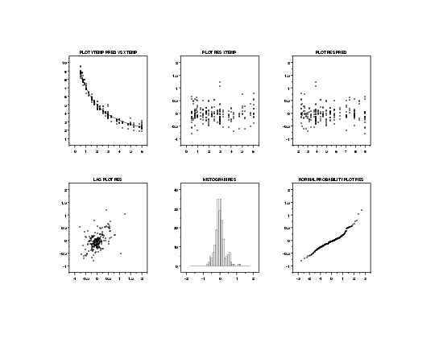
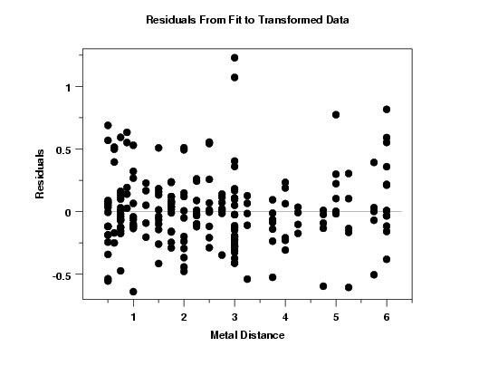

|
4.
Process Modeling
4.6. Case Studies in Process Modeling 4.6.3. Ultrasonic Reference Block Study
|
|||
| Transformations | One approach to the problem of non-homogeneous variances is to apply transformations to the data. | ||
| Plot of Common Transformations to Obtain Homogeneous Variances |
The first step is to try transformations of the
response variable that will result in homogeneous
variances. In practice, the square root, ln, and
reciprocal transformations often work well for
this purpose. We will try these first.
In examining these four plots, we are looking for the plot that shows the most constant variability of the ultrasonic response across values of metal distance. Although the scales of these plots differ widely, which would seem to make comparisons difficult, we are not comparing the absolute levesl of variability between plots here. Instead we are comparing only how constant the variation within each plot is for these four plots. The plot with the most constant variation will indicate which transformation is best. Based on constancy of the variation in the residuals, the square root transformation is probably the best tranformation to use for this data. |
||
| Plot of Common Transformations to Predictor Variable |
After transforming the response variable, it is often
helpful to transform the predictor variable as well.
In practice, the square root, ln, and
reciprocal transformations often work well for
this purpose. We will try these first.
This plot shows that none of the proposed transformations offers an improvement over using the raw predictor variable. |
||
| Square Root Fit |
Based on the above plots, we choose to fit a model with
a square root transformation for the response variable
and no transformation for the predictor variable.
Parameter Estimate Stan. Dev t Value b1 -0.0154326 0.8593E-02 -1.8 b2 0.0806714 0.1524E-02 53.6 b3 0.0638590 0.2900E-02 22.2 Residual standard deviation = 0.29715 Residual degrees of freedom = 211Although the residual standard deviation is lower than it was for the original fit, we cannot compare them directly since the fits were performed on different scales. |
||
| Plot of Predicted Values |
The plot of the predicted values with the transformed data indicates a good fit. The fitted model is $$ \widehat{\sqrt{y}} = \frac{\exp(-0.015x)} {0.0807 + 0.0639x} $$ |
||
| 6-Plot of Fit |

Since we transformed the data, we need to check that all of the regression assumptions are now valid. The 6-plot of the data using this model indicates no obvious violations of the assumptions. |
||
| Plot of Residuals |

In order to see more detail, we generate a full size version of the residuals versus predictor variable plot. This plot suggests that the errors now satisfy the assumption of homogeneous variances. |
||

{kind=link}
{kind=link}
{kind=link}
{kind=link}
{kind=link}